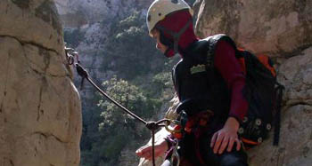

Terug...
maandag 14 april 2003 | Reisverhalen
Zeg het met … beelden! Klik op de foto voor meer.

Beeldverslag uit de Spaanse Pyreneeën (Aragon).
maandag 14 april 2003 | Reisverhalen
Zeg het met … beelden! Klik op de foto voor meer.

Beeldverslag uit de Spaanse Pyreneeën (Aragon).
Pieter Schepens op 16 april 2003
ik beloof plechtig meer commentaar bij de foto's te zetten. De eerste 24 zijn de revue al gepasseerd, binnenkort de rest...
Frederik Vandaele op 16 april 2003
En hoe! Mooi werk: ik kijk uit naar het vervolg. Misschien kan je als je klaar bent de mensen van onze scouts ook eens uitnodigen om een kijkje te nemen. Kwestie van wat harten te winnen voor een mogelijke paasreis.
Sir Psycho op 16 april 2003
Wow!